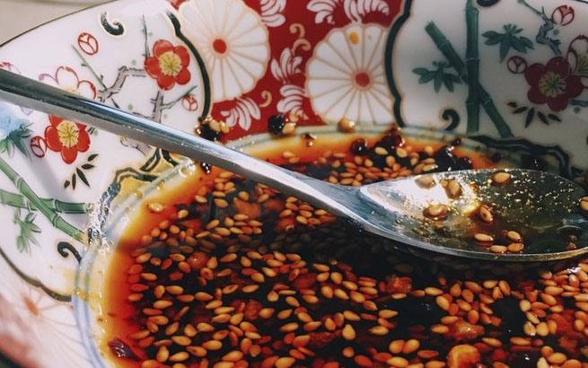

<ons-page>
  <ons-toolbar>
    <div class="left" [routerLink]="'/cookbook'" routerLinkActive='active'>&lt;</div>
    <div class="center">钟水饺的饺子蘸料</div>
  </ons-toolbar>


  <div class="content" style="background: white;">
    
    <ons-card>
    <div class="title">钟水饺的饺子蘸料</div>
    第一次在张妈妈川菜馆吃钟水饺就被红油甜辣口迷住了，回来后也查了不少配方，复制酱油什么的好麻烦……
    直到有天夜里特别想这口，又觉得跑去安定门太麻烦，里自己试着弄了下蘸料，居然意外的好吃，而且好简单！
    (￣_,￣ ),虽然跟钟水饺还是不一样，但是，我觉得好吃啊！
    </ons-card>
    <ons-card>
      <div class="title">配料</div>
    <table class="dataintable">
      <tbody>

      <tr>
        <td>酱油</td>
        <td>100ml</td>
      </tr>

      <tr>
        <td>醋</td>
        <td>40ml</td>
      </tr>

      <tr>
        <td>芝麻油</td>
        <td>10nl</td>
      </tr>

      <tr>
        <td>糖</td>
        <td>20g</td>
      </tr>

      <tr>
        <td>蒜</td>
        <td>50g</td>
      </tr>
      </tbody></table>
    </ons-card>
    <ons-card>
      <ons-button style="width:100%;margin-bottom: 10px" (click)="toastStart()">立刻开始</ons-button>
      <ons-button style="width:100%" (click)="toastSync()">添加到收藏</ons-button>
    </ons-card>
  </div>

</ons-page>

